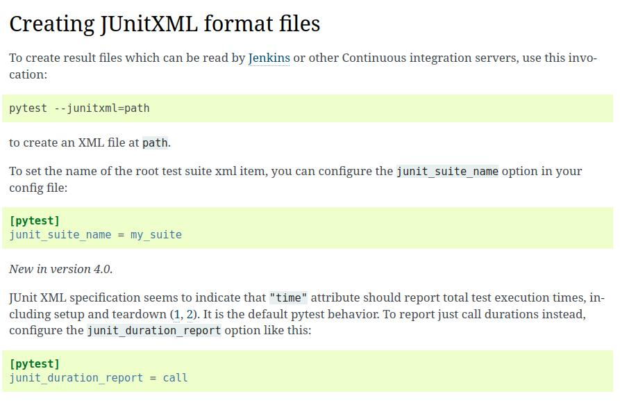
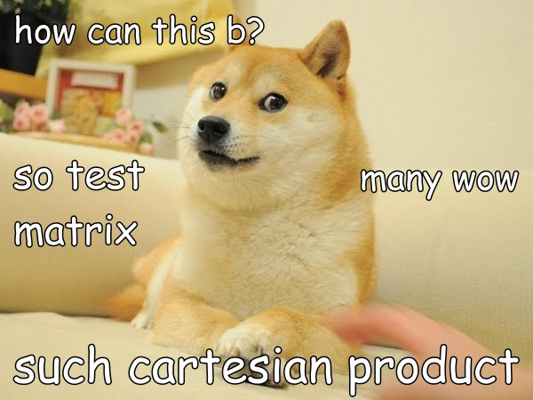

<h1 style="font-size: 3em"><tt>pytest</tt> for <tt>unittest</tt>ers</h1> <br/> <br/> <br/> <span style="font-size: 2.5em"> Paul Ganssle </span> <br/> <br/> <br/> <br/> <span style="font-size: 1em;"><em>This talk on Github: <a href="https://github.com/pganssle-talks/2024-pycon-us-pytest">pganssle-talks/2024-pycon-us-pytest</a></em> </span> <br/> <a rel="license" href="https://creativecommons.org/publicdomain/zero/1.0/"> <img src="external-images/logos/cc-zero.svg" height="45px"> </a> <br/> Notes: Hi everyone, my name is Paul Ganssle, I'm a software engineer at Google and a maintainer of a few open source packages, notably I maintain `dateutil` and I'm a CPython core dev. Today I'm going to be talking about the testing frameworks `pytest` and `unittest`. I prefer to use `pytest`, but I have a lot of experience with *both* frameworks, both at work and in the open source world. In CPython, we more or less have to use `unittest`, because it's *really* hard to bring in third party dependencies into CPython, even just for testing. At Google, we have historically used our own derivative of `unittest` called `absltest`, and when I first conceived of this talk, it was intended to make the case for why we might want to move *away* from `absltest` and at the very least provide active support for using `pytest` within Google. And in fact I'm happy to report that in the year or so since I made my plea for `pytest`, there actually *has* been some movement in that direction (though we've encountered a... notable setback recently...). My goal for this talk is to try to showcase why I — and a great many people — always choose `pytest` over `unittest` whenever possible, and maybe even to convince some people at large organizations with massive code-bases that migrating is more feasible than you'd think.
<div class="splash"> <p><tt>pytest</tt> is way too magical</p> <p class="fragment fade-in">... but in practice this doesn't matter</p> </div> Notes: For those of you in the audience who have considered `pytest`, one common objection is that it is too magical — and we'll get to all the magical stuff it does in a bit. The worry is that it can be hard to reason about `pytest`'s behavior because it's messing around with system code, inspecting the *names* of methods, rewriting byte code. And I will tell you something as a big proponent of `pytest`: `pytest` is way too magical for my tastes, it's true. But the other thing I'll say is that in practice, this doesn't really matter all that much. If you had shown me `pytest` when it was a young upstart and no one was using it, I would have thought that you were introducing a bunch of implicit behavior, it would lead to terrible technical debt and unmaintainable code. I would have thought that it would never work, but in practice, it's totally working. Pretty much everyone in the open source world uses it, and it's become the industry standard for testing in Python, and none of these dangers have come to pass. It pretty much works!
# Major differences from `unittest`: `assert` statements <div> ```python def test_bad_assert(self): a = 1 self.assertEqual(a, 2, "Custom error message") ``` <div class="code-separator"></div> ```txt $ python -m unittest F ====================================================================== FAIL: test_bad_assert (test_bad_assert.Tests.test_bad_assert) ---------------------------------------------------------------------- Traceback (most recent call last): File ".../test_bad_assert.py", line 10, in test_bad_assert self.assertEqual(a, 2, "Custom error message") AssertionError: 1 != 2 : Custom error message ---------------------------------------------------------------------- ``` </div> <div style="margin-bottom: 1em"> ```python def test_bad_assert(self): a = 1 assert a == 2, "Custom error message" ``` <div class="code-separator"></div> ```txt $ python -m unittest F ====================================================================== FAIL: test_bad_assert (test_bad_assert.Tests.test_bad_assert) ---------------------------------------------------------------------- Traceback (most recent call last): File ".../test_bad_assert.py", line 7, in test_bad_assert assert a == 2 AssertionError: Custom error message ---------------------------------------------------------------------- ``` </div> Notes: So now that we've gotten that out of the way, let's take a look at some of the specific ways that pytest is magical. The first major difference you'll notice from `unittest` is that `pytest` uses the `assert` statement instead of these `assert` methods on the `TestCase` object. One reason that `unittest` and its derivatives use assert methods like `assertEqual` is that the `assert` statement just raises an assertion error on failure, and doesn't really give you any information about what caused the error. With `assertEqual`, you are passing it both operands and telling it what notion of equality to use, and so the method is able to craft you a nice error message like "`a` doesn't equal `2`". If you were using bog standard `assert` statements, your testing framework would basically just be passed "a statement was true" or "a statement was false", plus any manually-written custom message you would want — meaning you'd basically need to manually and repetitively craft a bunch of error messages for every test. -- # Major differences from `unittest`: `assert` statements ```python def test_bad_assert(): a = 1 assert a == 2, "Custom error message" ``` <div class="code-separator"></div> <pre class="code-wrapper"> <tt class="hljs">$ pytest test_bad_assert.py <span class="pytest-bad">F [100%]</span> ================================== FAILURES ================================== <span class="pytest-bad">______________________________ <b>test_bad_assert</b> _______________________________</span> def test_bad_assert(): a = 1 > assert a == 2, "Custom error message" <span class="pytest-error">E AssertionError: Custom error message</span> <span class="pytest-error">E assert 1 == 2</span> <span class="pytest-error">test_bad_assert.py</span>:3: AssertionError ========================== short test summary info =========================== FAILED test_bad_assert.py::test_bad_assert - AssertionError: Custom error message <span class="pytest-bad">============================= <b>1 failed</b> in 0.10s ==============================</span> </tt> </pre> </div> - Achieved by re-writing the bytecode before execution - Works with assertions disabled (`python -O`) Notes: This is the first way that `pytest` is magical — because with `pytest`, even though you are using `assert` statements, it still gives you a nice clean error message, including the operands and the operation that happened. The way it does this is that before it executes any test code, it actually compiles your tests into bytecode, then re-writes the bytecode to extract the relevant information and change what error messages are being raised. Another reason that `unittest` avoids the `assert` statement is that `python` ignores all `assert` statements when it's run with `-O`, so if these `assert` statements aren't being executed in your test code, it's not possible to test that your code works when run with `-O`! Again, `pytest`'s byte code re-writing saves us here, because `pytest` specifically rewrites the byte code for `assert` statements *in test code* to no longer actually use the `assert` statement under the hood, leaving the `assert` statements in your module alone, so you can still run your tests in the optimized configuration. -- ```python def test_bad_assert(): a = 1 assert ( a == 2, "My very long error message doesn't fit on one line, gotta break it up" ) ``` <div class="code-separator"></div> ```python def test_bad_assert(): a = 1 assert a == 2, \ "My very long error message doesn't fit on one line, gotta break it up" ``` <!-- .element class="fragment disappearing-fragment nospace-fragment fade-out" data-fragment-index="0" --> ```python def test_bad_assert(): a = 1 assert tuple( a ==2, "My very long error message doesn't fit on one line, gotta break it up" ) ``` <!-- .element class="fragment nospace-fragment fade-in" data-fragment-index="0" --> <div class="code-separator"></div> <pre class="code-wrapper fragment fade-in" data-fragment-index="1"> <tt class="hljs">$ pytest test_bad_assert.py <span class="pytest-ok">============================= test session starts ==============================</span> test_bad_assert.py <span class="pytest-pass">.</span> <span class="pytest-warn">[100%]</span> <span class="pytest-warn">=============================== warnings summary ===============================</span> test_bad_assert.py:7 .../test_bad_assert.py:7: PytestAssertRewriteWarning: assertion is always true, perhaps remove parentheses? assert ( -- Docs: https://docs.pytest.org/en/stable/how-to/capture-warnings.html <span class="pytest-warn">========================= <span class="pytest-pass">1 passed</span>, <span class="pytest-warning-count">1 warning</span> in 1.13s ========================= </tt> </pre> Notes: The last problem with `assert` statements — and this is a problem with `assert` in general, not just in testing, is that it is subject to this particularly nasty and easy-to-overlook bug. Looking at these two code blocks, you expect them to be equivalent, right? The first one is just the second one but instead of a line continuation you've wrapped the arguments to `assert` in parentheses. But in reality, what's happened is that the first block is equivalent to *this* block — you've taken the *two* arguments passed to the `assert` statement, and turned them into *one* argument — a non-empty `tuple`, which always evaluates to `True`, and thus this `assert` statement is a no-op. `pytest` doesn't fix this problem out of the box, necessarily, but it *does* raise a warning, and it is easy to configure `pytest` to elevate that to an exception. In practice, I've never actually seen this error personally, but I do know that it is fairly common. --- # Advantage: No need for custom `assert` methods ```python def test_special_asserts(): a = (1, 2, 3) assert a is not None # self.assertIsNot(a, None) assert a < (2, 3, 4) # self.assertLess(a, (2, 3, 4)) assert len(a) == 4 # self.assertLen(a, 4) - absltest extension ``` <br/> <pre class="code-wrapper"> <tt class="hljs"><span class="pytest-bad">_____________________________ test_special_asserts _____________________________</span> def test_special_asserts(): a = (1, 2, 3) assert a is not None # self.assertIsNot(a, None) assert a < (2, 3, 4) # self.assertLess(a, (2, 3, 4)) <span class="pytest-error">> assert len(a) == 4 # self.assertLen(a, 4) - absltest extension E assert 3 == 4 E + where 3 = len((1, 2, 3)) test_special_assert.py</span>:5: AssertionError </tt> </pre> Notes: Now we've seen some problems that can be used by using bare `assert` methods, but we haven't seen the advantages that would lead `pytest` to go out of their way to implement byte code rewriting just to use this style. So why do this at all? Well, one of the big advantages is that you don't need a huge proliferation of custom `assert` methods for every little operation you might want to do. Since `pytest` is able to extract out the relevant operations, you can just use natural comparisons with their normal semantics. It even does this nifty thing where if one of the operands is a function call, it shows you both the result that didn't compare equal *and* the function call that produced the result. In `absltest` there's a one-off extension for the common case where that function is `len`, but this approach is much more scalable, since it doesn't require custom assert methods for any function you might want to call. -- # Handling floats ```python import pytest def test_float_bad(): a = 0.1 + 0.2 assert a == 0.3 def test_float_good(): a = 0.1 + 0.2 assert a == pytest.approx(0.3) ``` <div class="code-separator"></div> <pre class="code-wrapper"> <tt class="hljs"><span class="pytest-bad">________________________________ test_float_bad ________________________________</span> def test_float_bad(): a = 0.1 + 0.2 <span class="pytest-error">> assert a == 0.3 E assert 0.30000000000000004 == 0.3 test_floats.py</span>:5: AssertionError </tt> </pre> Notes: That's all well and good, you may say, but what about floats? Don't we *need* custom assertion functions for when we want fuzzy matches? Or are we supposed to write our own custom equality function just for fuzzy float comparisons? For that case, you can use `pytest`'s built-in wrapper function, `approx`, which takes float objects and wraps them in an object whose equality semantics are fuzzy. You can also extend this in general — rather than defining a custom assertion method, you can define custom comparison semantics, and use the normal assertion methods.
# Error Messages: `unittest` ```python class Tests(unittest.TestCase): def test_timestamp(self): for dt_1, dt_2 in get_datetimes(): ts2 = dt_2.timestamp() dt_rt = dt_1 + (dt_2 - dt_1) self.assertEqual(ts2, dt_rt.timestamp()) ``` <div class="code-separator"></div> <div class="side-by-side"> <div class="left"> ### `unittest` ```txt $ python -m unittest test_error_message.py F ====================================================================== FAIL: test_timestamp (test_error_message.Tests.test_timestamp) ---------------------------------------------------------------------- Traceback (most recent call last): File ".../test_error_message.py", line 35, in test_timestamp self.assertEqual(ts2, dt_rt.timestamp()) AssertionError: 1715822040.0 != 1715818440.0 ---------------------------------------------------------------------- Ran 1 test in 0.003s FAILED (failures=1) ``` </div> <div class="right fragment fade-in nospace-fragment" data-fragment-index="0"> ### `pytest` <pre class="code-wrapper fragment disappearing-fragment nospace-fragment fade-out" data-fragment-index="1"><tt class="hljs"><span class="pytest-ok">============================= test session starts ==============================</span> <span class="pytest-ok">collected 1 item </span> test_error_message.py <span class="pytest-bad">F [100%]</span> =================================== FAILURES =================================== <span class="pytest-error">________________________________ test_timestamp ________________________________</span> def test_timestamp(): for dt_1, dt_2 in get_datetimes(): ts2 = dt_2.timestamp() dt_rt = dt_1 + (dt_2 - dt_1) > assert ts2 == dt_rt.timestamp() <span class="pytest-error">E AssertionError: assert 1715822040.0 == 1715818440.0</span> <span class="pytest-error">E + where 1715818440.0 = <built-in method timestamp of datetime object ...>()</span> <span class="pytest-error">E + where <built-in method timestamp of datetime object...> = datetime(2024, 5, 15, 20, 14, tzinfo=ZoneInfo(key='America/New_York')).timestamp</span> <span class="pytest-error">test_error_message.py</span>:33: AssertionError <span class="pytest-ok">=========================== short test summary info ============================</span> <span class="pytest-bad">FAILED</span> test_error_message.py::<span class="pytest-ok">test_timestamp</span> - AssertionError: assert 1715822040.0 == 1715818440.0 <span class="pytest-bad">============================== </span><span class="pytest-error">1 failed</span><span class="pytest-bad"> in 0.12s ===============================</span> </tt></pre> <pre class="code-wrapper fragment nospace-fragment fade-in" data-fragment-index="1"><tt class="hljs"><span class="pytest-ok">============================= test session starts ==============================</span> <span class="pytest-ok">collected 1 item </span> test_error_message.py <span class="pytest-bad">F [100%]</span> =================================== FAILURES =================================== <span class="pytest-error">________________________________ test_timestamp ________________________________</span> <font color="#729FCF">def</font> <font color="#4BE234">test_timestamp</font>(): <font color="#729FCF">for</font> dt_1, dt_2 <font color="#AD7FA8">in</font> get_datetimes(): ts2 = dt_2.timestamp() dt_rt = dt_1 + (dt_2 - dt_1) > <font color="#729FCF">assert</font> ts2 == dt_rt.timestamp() <span class="pytest-error">E AssertionError: assert 1715822040.0 == 1715818440.0</span> <span class="pytest-error">E + where 1715818440.0 = <built-in method timestamp of datetime object...>()</span> <span class="pytest-error">E + where <built-in method timestamp of datetime object...> = datetime(2024, 5, 15, 20, 14, tzinfo=ZoneInfo(key='America/New_York')).timestamp</span> <span class="pytest-error">test_error_message.py</span>:33: AssertionError <span class="pytest-ok">=========================== short test summary info ============================</span> <span class="pytest-bad">FAILED</span> test_error_message.py::<span class="pytest-ok">test_timestamp</span> - AssertionError: assert 1715822040.0 == 1715818440.0 <span class="pytest-bad">============================== </span><span class="pytest-error">1 failed</span><span class="pytest-bad"> in 0.20s ===============================</span> </tt></pre> </div> </div> Notes: Another nice advantage of `pytest` is the way it displays errors when a test fails. Take for example this test, which generates a bunch of datetimes and tests to see if they satisfy this property. You'll notice that with `unittest`, the result you get is not exactly useful, since the operands to `assertEqual` are both just large numbers, with no indication of what datetimes were involved. Writing an equivalent test with `pytest` gives this error message, which gives a lot more information about what went wrong. You may also think I'm putting my thumb on the scales by including all this bolding and red text and such, but that's another difference between `pytest` and `unittest` — `unittest` gives plain text output, whereas `pytest` makes use of color and bolding, and in fact if you have `pygments` installed, you can even get it to show you syntax highligting.
# `pytest` is compatible with `unittest` <div class="side-by-side"> <div class="left"> ```txt $ python -m unittest F ====================================================================== FAIL: test_special_asserts (test_special_methods.Tests.test_special_asserts) ---------------------------------------------------------------------- Traceback (most recent call last): File ".../test_special_methods.py", line 8, in test_special_asserts self.assertEqual(len(a), 4) AssertionError: 3 != 4 ---------------------------------------------------------------------- Ran 1 test in 0.000s FAILED (failures=1) ``` </div> <div class="right"> <pre class="code-wrapper"><tt class="hljs">$ pytest test_special_methods.py <span class="pytest-ok">============================= test session starts ==============================</span> <span class="pytest-ok">collected 1 item </span> test_special_methods.py <span class="pytest-bad">F [100%]</span> =================================== FAILURES =================================== <span class="pytest-error">__________________________ Tests.test_special_asserts __________________________</span> self = <test_special_methods.Tests testMethod=test_special_asserts><br/> <font color="#729FCF">def</font> <font color="#4BE234">test_special_asserts</font>(<font color="#34E2E2">self</font>): a = (<font color="#729FCF">1</font>, <font color="#729FCF">2</font>, <font color="#729FCF">3</font>) <font color="#34E2E2">self</font>.assertIsNot(a, <font color="#729FCF">None</font>) <font color="#34E2E2">self</font>.assertLess(a, (<font color="#729FCF">2</font>, <font color="#729FCF">3</font>, <font color="#729FCF">4</font>)) > <font color="#34E2E2">self</font>.assertEqual(<font color="#34E2E2">len</font>(a), <font color="#729FCF">4</font>) <span class="pytest-error">E AssertionError: 3 != 4</span><br/> <span class="pytest-error">test_special_methods.py</span>:8: AssertionError <span class="pytest-ok">=========================== short test summary info ============================</span> <span class="pytest-bad">FAILED</span> test_special_methods.py::<span class="pytest-ok">Tests::test_special_asserts</span> - AssertionError: 3 != 4 <span class="pytest-bad">============================== </span><span class="pytest-error">1 failed</span><span class="pytest-bad"> in 1.04s ===============================</span> </tt></pre> </div> </div> Notes: In fact, you can get *some* of this advantage from `pytest` even without migrating your tests away from `unittest` style. You see, `pytest` is both a test runner and a testing framework, and the test runner is perfectly compatible with `unittest`. So you can basically get this nicely-formatted error message for free by switching to `pytest` as your test runner. That said, when you are using `unittest` test cases, you don't get the full benefit of the byte code rewriting, so you don't get that nice thing where `pytest` can tell you that when it says `3 != 4`, it means `len(a) != 4`. -- <pre class="code-wrapper disappearing-fragment nospace-fragment fragment fade-out" data-fragment-index="0"><tt class="hljs">$ pytest test_error_message.py <span class="pytest-ok">============================= test session starts ==============================</span> <span class="pytest-ok">collected 1 item </span> test_error_message.py <span class="pytest-bad">F [100%]</span> =================================== FAILURES =================================== <span class="pytest-error">_____________________________ Tests.test_timestamp _____________________________</span> <font color="#729FCF">def</font> <font color="#4BE234">test_timestamp</font>(<font color="#34E2E2">self</font>): <font color="#729FCF">for</font> dt_1, dt_2 <font color="#AD7FA8">in</font> get_datetimes(): ts2 = dt_2.timestamp() dt_rt = dt_1 + (dt_2 - dt_1) > <font color="#34E2E2">self</font>.assertEqual(ts2, dt_rt.timestamp()) <span class="pytest-error">E AssertionError: 1715822040.0 != 1715818440.0</span> <span class="pytest-error">test_error_message.py</span>:35: AssertionError <span class="pytest-ok">=========================== short test summary info ============================</span> <span class="pytest-bad">FAILED</span> test_error_message.py::<span class="pytest-ok">Tests::test_timestamp</span> - AssertionError: 1715822040.0 != 1715818440.0 <span class="pytest-bad">============================== </span><span class="pytest-error">1 failed</span><span class="pytest-bad"> in 0.93s ===============================</span> </tt></pre> <pre class="code-wrapper fragment nospace-fragment fade-in" data-fragment-index="0"><tt class="hljs">$ pytest test_error_message.py <b>--showlocals</b> <span class="pytest-ok">============================= test session starts ==============================</span> <span class="pytest-ok">collected 1 item </span> test_error_message.py <span class="pytest-bad">F [100%]</span> =================================== FAILURES =================================== <span class="pytest-error">_____________________________ Tests.test_timestamp _____________________________</span> <font color="#729FCF">def</font> <font color="#4BE234">test_timestamp</font>(<font color="#34E2E2">self</font>): <font color="#729FCF">for</font> dt_1, dt_2 <font color="#AD7FA8">in</font> get_datetimes(): ts2 = dt_2.timestamp() dt_rt = dt_1 + (dt_2 - dt_1) > <font color="#34E2E2">self</font>.assertEqual(ts2, dt_rt.timestamp()) <span class="pytest-error">E AssertionError: 1715822040.0 != 1715818440.0</span> dt_1 = datetime.datetime(1970, 1, 1, 0, 0, tzinfo=zoneinfo.ZoneInfo(key='America/New_York')) dt_2 = datetime.datetime(2024, 5, 16, 1, 14, tzinfo=datetime.timezone.utc) dt_rt = datetime.datetime(2024, 5, 15, 20, 14, tzinfo=zoneinfo.ZoneInfo(key='America/New_York')) self = <test_error_message.Tests testMethod=test_timestamp> ts2 = 1715822040.0 <span class="pytest-error">test_error_message.py</span>:35: AssertionError <span class="pytest-ok">=========================== short test summary info ============================</span> <span class="pytest-bad">FAILED</span> test_error_message.py::<span class="pytest-ok">Tests::test_timestamp</span> - AssertionError: 1715822040.0 != 1715818440.0 <span class="pytest-bad">============================== </span><span class="pytest-error">1 failed</span><span class="pytest-bad"> in 0.92s ===============================</span> </tt></pre> Notes: However, you actually can get *something* like that with the `pytest` test runner. Going back to our `datetime` example, you can see that `pytest` doesn't expand the operands like it does when you're using a `unittest` TestCase, but there's something else you can do. If you pass `-l` or `--showlocals`, `pytest` will capture all the local variables that are in scope in the test, and include them in the error message. It's a bit more verbose, but it gives a lot more information, and might even be something you want to use even if you are using `pytest` as your test framework as well. --  <span class="footnote"> `pytest` has many options related to configuring test output, see [the documentation here](https://docs.pytest.org/en/7.1.x/how-to/output.html) </span>
# Classes are optional in `pytest` <div class="side-by-side" style="margin-bottom:1em"> <div class="left" style="width: 40dvw; font-size: 1.25em"> ```python def test_basic(): a = 4 b = 4 assert a == b ``` </div> <div class="right" style="width: 40dvw; font-size: 1.25em"> ```python class ExampleTest(unittest.TestCase): def test_basic(self): a = 4 b = 4 self.assertEqual(a, b) ``` </div> </div> - Test cases are discovered based on [naming conventions (configurable)](https://docs.pytest.org/en/7.1.x/example/pythoncollection.html). - Files: `test_*.py`, `*_test.py` - Tests: `test_*` - Classes: `Test*` - Most setup/teardown use cases are handled with fixtures - `pytest` also supports using classes -- # Using classes in `pytest` <div class="side-by-side"> <div class="left" style="width:55dvw; max-width:55dvw; font-size:1.5em"> ```python class TestClass: @classmethod def setup_class(cls): """Run when class is initialized.""" cls.EXPENSIVE_GLOBAL = generate_expensive_global() @classmethod def teardown_class(cls): """Run when class is destroyed.""" cls.EXPENSIVE_GLOBAL.free_resources() def setup_method(self, method): """Run before every test method execution.""" def teardown_method(self, method): """Run after every test method execution.""" def test_method(self): """This is a test that is actually run.""" assert 1 == 1 ``` </div> <div class="right" style="width: 30dvw; font-size: 0.75em; align-self: flex-start"> - `{setup,teardown}_module(module)` also available - `{setup,teardown}_function(func)` works with bare test functions </div> </div>
-- # Fixtures <div class="fragment fade-out disappearing-fragment nospace-fragment" data-fragment-index="0"> ```python @pytest.fixture # Decorator to make a function a fixture def fixture_name(): do_some_setup() # This code is executed before each test that uses # the fixture is called yield fixture_payload # This is passed to the test function do_some_teardown() # This code is executed after the test function # completes ``` </div> <div class="fragment fade-in disappearing-fragment nospace-fragment" data-fragment-index="0"> ```python @pytest.fixture def config_dict(): yield {"option": "value"} def test_config(config_dict): # config_dict() executed my_module.run_function(config=config_dict) def test_modifying_config(config_dict): # A new dict is created here config_dict["option"] = "value2" my_module.run_function(config=config_dict) def test_hard_drive_deleted(): # config_dict() not executed my_module.delete_user_hard_drive() assert not any(pathlib.Path("/").iterdir()) ``` </div> -- # Fixtures are modular ```python @pytest.fixture def random_user(): username = my_module.create_random_user() yield username my_module.delete_user(username) def test_func(random_user): my_module.some_func(random_user) def test_func_with_config(random_user, config_dict): my_module.some_func(random_user, config=config_dict) ``` -- # Fixtures are composable ```python @pytest.fixture def random_user(): username = my_module.create_random_user() yield username my_module.delete_user(username) @pytest.fixture def random_user_with_home(random_user, tmp_path): home_dir = (tmp_path / random_user.username).mkdir() random_user.set_home_dir(home_dir) yield random_user def test_get_home_dir(random_user_with_home): user_homedir = random_user_with_home.get_homedir() assert user_homedir.name == random_user_with_home.username ``` -- <!-- .slide: data-visibility="hidden" --> # Fixture scope ```python @pytest.fixture(scope="session") def query_session() -> Session: session = create_session() with Semaphore(4): # No more than 4 threads a time making queries yield session @pytest.fixture(scope="class") def registered_endpoint_base(query_session: Session) -> str: user_id = str(uuid.uuid4()) query_session.post(f"{BASE}/register_uuid", data={"user_id": user_id}) yield f"{BASE}/user_id/" @pytest.fixture(scope="function") def payload_options(): yield {"option_1": "value_1", "option_2": "value_2"} ``` <br/> ```python class User1Class: def test_request_1(self, query_session: Session, registered_endpoint_base: str, payload_options) -> None: response = query_session.get(f"{registered_endpoint_base}/query_1", data=my_module.Class1.query_payload_1(**payload_options)) assert response.content() == EXPECTED_RESPONSE_CONTENT_1 def test_request_2(self, query_session: Session, registered_endpoint_base: str, payload_options) -> None: response = query_session.get(f"{registered_endpoint_base}/query_2", data=my_module.query_payload_2(**payload_options)) assert response.content() == EXPECTED_RESPONSE_CONTENT_2 ``` <!-- .element class="disappearing-fragment fragment nospace-fragment fade-out" data-fragment-index="0" --> ```python class User2Class: def test_request_1(self, query_session: Session, registered_endpoint_base: str, payload_options) -> None: response = query_session.get(f"{get_api_url(user_id)}/query_1", data=my_module.Class2.query_payload_1(**payload_options)) assert response.content() == EXPECTED_RESPONSE_CONTENT_1 ``` <!-- .element class="disappearing-fragment fragment nospace-fragment fade-in-and-out" data-fragment-index="0" --> ```python def test_request_3(query_session: Session, payload_options) -> None: payload_options["example"] = "value_3" response = session.get(f"{BASE}/example_endpoint", my_module.get_query_payload(**payload_options)) assert response.content() == EXPECTED_RESPONSE_3 ``` <!-- .element class="fragment nospace-fragment fade-in" data-fragment-index="1" --> <br/> <div class="fragment disappearing-fragment nospace-fragment fade-in-and-out" data-fragment-index="2"> - `query_session`: Run 1 time - `registered_endpoint_base`: Run 2 times - `payload_options`: Run 4 times </div> <div class="fragment fade-in" data-fragment-index="3"> <u>Available scopes:</u> <div class="side-by-side"> <div class="left"> - `session` - `package` - `module` </div> <div class="right"> - `class` - `function` - *Dynamic* </div> </div> </div> Notes: -- # Fixture UI: Parameterizing fixtures ```python @pytest.fixture def random_user_indirect(request) -> str: username_base = request.param user = User(username_base) user.create_user() yield user.username user.delete_user() # Pass value via indirect parameterization @pytest.mark.parametrize("random_user_indirect", ["josé"], indirect=True) def test_users_with_accents_indirect(random_user_indirect): assert get_user(random_user_indirect).base == "josé" ``` <br/><br/> ```python @pytest.fixture def username_base() -> str | None: return None ``` <!-- .element class="fragment nospace-fragment fade-in" --> ```python @pytest.fixture def random_user(username_base: str | None) -> str: user = User(username_base) user.create_user() yield user.username user.delete_user() # Pass value via direct parameterization (note username_base != random_user) @pytest.mark.parametrize("username_base", ["josé"]) def test_users_with_accents(random_user): random_user.do_something() ``` <span class="footnote"> More on [direct parameterization](https://docs.pytest.org/en/7.2.x/how-to/fixtures.html#override-a-fixture-with-direct-test-parametrization) and [indirect parameterization](https://docs.pytest.org/en/latest/example/parametrize.html#indirect-parametrization) in the `pytest` documentation </span> -- # Fixture UI Issues <pre class="code-wrapper"><tt class="hljs">$ pytest test_confusing_error_message.py <span class="pytest-ok">============================= test session starts ==============================</span> <span class="pytest-ok">collected 1 item </span> test_confusing_error_message.py <span class="pytest-bad">E [100%]</span> ==================================== ERRORS ==================================== <font color="#EF2929"><span class="pytest-ok">______________________ ERROR at setup of test_refactored _______________________</span></font> file test_confusing_error_message.py, line 1 def test_refactored(self): <span class="pytest-bad">E fixture 'self' not found</span> <span class="pytest-bad">> available fixtures: cache, capfd, capfdbinary, caplog, capsys, capsysbinary, cov, doctest_namespace, monkeypatch, no_cover, pytestconfig, record_property, record_testsuite_property, record_xml_attribute, recwarn, subtests, tmp_path, tmp_path_factory, tmpdir, tmpdir_factory</span> <span class="pytest-bad">> use 'pytest --fixtures [testpath]' for help on them.</span> test_confusing_error_message.py:1 <span class="pytest-ok">=========================== short test summary info ============================</span> <span class="pytest-bad">ERROR</span> test_confusing_error_message.py::<span class="pytest-ok">test_refactored</span> <span class="pytest-bad">=============================== </span><font color="#EF2929"><span class="pytest-ok">1 error</span></font><span class="pytest-bad"> in 0.39s ===============================</span> </tt></pre> -- # Fixture discovery ```python def test_something(tmp_path: pathlib.Path) -> None: tmp_path.write_text(my_module.generate_text()) assert "SOME_STRING" in my_module.read_path(tmp_path) ``` <style> div.pytest-figure-container { display: flex; flex-direction: row; align-items: center; justify-content: space-evenly; } div.pytest-figure-container figure { max-width: 40dvw; } div.pytest-figure-container img { max-width: 45dvw; max-height: 45dvh; height: auto; } div.pytest-figure-container figure figcaption { font-size: 0.7em; font-style: italic; } </style> <div class="pytest-figure-container"> <figure class="fragment disappearing-fragment nospace-fragment fade-out" data-fragment-index="0"> <img src="external-images/fixture_availability.svg" alt="A diagram showing the scope that fixtures are available in"> <figcaption> Scope of fixture availability for fixtures defined in `conftest.py` files at different levels in the directory structure. </figcaption> </figure> <figure class="fragment disappearing-fragment nospace-fragment fade-out" data-fragment-index="0"> <img src="external-images/fixture_availability_plugins.svg" alt="A diagram showing the scope that fixtures are available in with plugins" style="height: auto; max-width: 40dvw"> <figcaption> Fixture availability with plugins installed </figcaption> </figure> </div> -- # Proposed improvements ```python # Explicitly import your fixtures from pytest.fixtures import tmp_path from my_plugin import setup_globals # Explicitly apply fixtures you want @pytest.apply(tmp_path) def test_something(tmp_path: pathlib.Path) -> None: tmp_path.write_text(my_module.generate_text()) assert "SOME_STRING" in my_module.read_path(tmp_path) # Example of a "function-scoped" autouse fixture @pytest.use(setup_globals) def test_something_with_globals(): assert my_module.INITIALIZED_GLOBAL == "initialized" ``` <div class="code-separator"></div> ```python @pytest.fixture def random_user(username_base: str | None = None) -> str: user = User(username_base) user.create_user() yield user.username user.delete_user() # Bind as part of the wrapper decorator @pytest.apply(random_user, username_base="josé") def test_usernames_with_accents(random_user: str) -> None: assert get_user(random_user).base == "josé" # Allow parameterization directly in apply @pytest.apply(random_user, [ {"username_base": "josé"}, ("minecraft_dude",), pytest.param(username_base="calvin"), ]) def test_username_base(random_user: str) -> None: assert get_user(random_user).base is not None ``` <!-- .element class="fragment fade-in" --> <span class="footnote"> A reform along these lines was also [proposed by Abid Mujtaba](https://github.com/abid-mujtaba/testing-fixtures) in 2023 </span>
# Markers *Adds some metadata to a test* ```python def test_light_thing(): assert 1 + 1 == 2 @pytest.mark.heavy def test_heavy_thing(): assert calculate_digit_of_e(1_000_000_000) == 4 ``` <br/> <pre class="code-wrapper"> <tt class="hljs">$ pytest -k 'not heavy' pytest/test_marks.py <span class="pytest-ok">============================= test session starts ==============================</span> collected 2 items / 1 deselected / 1 selected ..//test_marks.py <span class="pytest-pass">. [100%]</span> <span class="pytest-good">======================= <span class="pytest-pass">1 passed</span>, <span class="pytest-warn">1 deselected</span> in 0.15s ========================</span> </tt> </pre> <br/> ```python def test_build_exists(): assert BUILD_PATH.exists() @pytest.mark.depends(on="test_build_exists") def test_build_succeeded(): with open(BUILD_PATH / "pkg_info", "rt") as f: assert next(f) == "PKG_INFO_HEADER" ... ``` <!-- .element class="fragment fade-in" data-fragment-index="0" --> <p class="footnote fragment fade-in" data-fragment-index="0"> Example using <a href="https://pypi.org/project/pytest-depends/"><tt>pytest-depends</tt></a>. </p> -- # `xfail` and `skip` ```python @pytest.mark.skipif(sys.version_info < (3, 10), reason="Uses feature from 3.10") def test_skipped(): assert (14).bit_count() == 3 @pytest.mark.xfail(reason="Always fails") def test_xfail(): assert False @pytest.mark.xfail(reason="Always fails") def test_xpass(): assert True ``` <br/> <pre class="code-wrapper"> <tt class="hljs">$ pytest pytest/test_xfail.py <span class="pytest-ok">============================= test session starts ==============================</span> pytest/test_xfail.py <span class="pytest-warn">sx</span><span class="pytest-bad">F [100%]</span> =================================== FAILURES =================================== <span class="pytest-error">__________________________________ test_xpass __________________________________</span> [XPASS(strict)] Always fails <span class="pytest-ok">=========================== short test summary info ============================</span> <span class="pytest-bad">FAILED</span> .../test_xfail.py::<b>test_xpass</b> <span class="pytest-bad">=================== <span class="pytest-error">1 failed</span>, <span class="pytest-warn">1 skipped, 1 xfailed</span> in 0.04s ====================</span> </tt> </pre> <span class="footnote">For more details see <a href="https://ganssle.io/talks/#xfail-and-skip"><i>my talk at PyTexas 2022</i></a> or <a href="https://blog.ganssle.io/articles/2021/11/pytest-xfail.html">one of my blog posts on the subject</a> (https://blog.ganssle.io) </span>
# Test paramet<span style="color:#D2D2D2">e</span>rization ```python @pytest.mark.parametrize("dt_str", [ "2025-01-01T01+00:00", "2025-01-01T01:00+00:00", "2025-01-01T01:00:00+00:00", pytest.param("2025-01-01T01:00:00Z", marks=pytest.mark.xfail(sys.version_info < (3, 11), reason="Z is not supported")), ]) def test_fromisoformat(dt_str: str) -> None: expected_datetime = datetime(2025, 1, 1, 1, tzinfo=UTC) assert datetime.fromisoformat(dt_str) == expected_datetime ``` <br/> <pre class="code-wrapper"> <tt class="hljs">$ pytest -v <span class="pytest-ok">============================= test session starts ==============================</span> <span class="pytest-ok">collected 4 items </span> ...::test_fromisoformat[2025-01-01T01+00:00] <span class="pytest-good">PASSED [ 25%]</span> ...::test_fromisoformat[2025-01-01T01:00+00:00] <span class="pytest-good">PASSED [ 50%]</span> ...::test_fromisoformat[2025-01-01T01:00:00+00:00] <span class="pytest-good">PASSED [ 75%]</span> ...::test_fromisoformat[2025-01-01T01:00:00Z] <span class="pytest-warn">XFAIL</span><span class="pytest-good"> [100%]</span> <span class="pytest-ok">=========================== short test summary info ============================</span> <span class="pytest-warn">XFAIL</span> ...::test_fromisoformat[2025-01-01T01:00:00Z] - Z is not supported <span class="pytest-good">========================= <span class="pytest-pass">3 passed</span>, <span class="pytest-bad">1 xfailed</span> in 0.10s =========================</span> </tt> </pre> -- # `unittest_parametrize` ```python import unittest_parametrize from unittest_parametrize import parametrize, param class Tests(unittest_parametrize.ParametrizedTestCase): @parametrize("dt_str", [ ("2025-01-01T01+00:00",), ("2025-01-01T01:00+00:00",), ("2025-01-01T01:00:00+00:00",), ]) def test_fromisoformat(self, dt_str): expected_datetime = datetime(2025, 1, 1, 1, tzinfo=UTC) self.assertEqual(datetime.fromisoformat(dt_str), expected_datetime) ``` <br/> ```txt $ python -m unittest -v parameterize test_fromisoformat_0 (parameterize.Tests.test_fromisoformat_0) ... ok test_fromisoformat_1 (parameterize.Tests.test_fromisoformat_1) ... ok test_fromisoformat_2 (parameterize.Tests.test_fromisoformat_2) ... ok ---------------------------------------------------------------------- Ran 3 tests in 0.000s OK ``` -- <!-- .slide: data-visibility="hidden" --> # `unittest_parametrize` <table class="alignment-table"> <tr> <td> ```python @parametrize("x,expected", [ param(1, 1), param(2, 4), param(0, 0, id="zero"), param(-4, 16, id="negative"), ]) def test_square(self, x, expected): self.assertEqual(x**2, expected) ``` <!-- .element class="fragment disappearing-fragment fade-out" data-fragment-index="0" --> ```python @parametrize("x,expected", [ (1, 1), (2, 4), (0, 0), (-4, 16), ], ids=[None, None, "zero", "negative"]) def test_square(self, x, expected): self.assertEqual(x**2, expected) ``` <!-- .element class="fragment disappearing-fragment fade-in" data-fragment-index="0" --> </td> <td> ```python @pytest.mark.parametrize("x,expected", [ pytest.param(1, 1), pytest.param(2, 4), pytest.param(0, 0, id="zero"), pytest.param(-4, 16, id="negative"), ]) def test_square(x, expected): assert x**2 == expected ``` <!-- .element class="fragment disappearing-fragment fade-out" data-fragment-index="0" --> ```python @pytest.mark.parametrize("x,expected", [ (1, 1), (2, 4), (0, 0), (-4, 16), ], ids=[None, None, "zero", "negative"]) def test_square(x, expected): assert x**2 == expected ``` <!-- .element class="fragment disappearing-fragment fade-in" data-fragment-index="0" --> </td> </tr> <tr><td colspan="2"><div class="code-separator"></div></td></tr> <tr> <td> ```txt test_square_0 (parameterize.Tests.test_square_0) ... ok test_square_1 (parameterize.Tests.test_square_1) ... ok test_square_negative (parameterize.Tests.test_square_negative) ... ok test_square_zero (parameterize.Tests.test_square_zero) ... ok ---------------------------------------------------------------------- Ran 4 tests in 0.000s ``` </td> <td> <pre class="code-wrapper"><tt class="hljs">$ pytest -v <span class="pytest-ok">============================= test session starts ==============================</span> <span class="pytest-ok">collected 4 items </span> ...::test_square[1-1] <span class="pytest-pass">PASSED [ 25%]</span> ...::test_square[2-4] <span class="pytest-pass">PASSED [ 50%]</span> ...::test_square[zero] <span class="pytest-pass">PASSED [ 75%]</span> ...::test_square[negative] <span class="pytest-pass">PASSED [100%]</span> <span class="pytest-pass">============================== </span><span class="pytest-good">4 passed</span><span class="pytest-pass"> in 0.14s ===============================</span> </tt></pre> </td> </tr> </table> -- # Stacking parametrize decorators ```python @pytest.mark.parametrize("x", [4, 5, 6]) @pytest.mark.parametrize("y", [3, 2, 1]) def test_multiply(x, y): z = x * y assert z > x and z > y ``` <br/> <pre class="code-wrapper"><tt class="hljs">$ pytest --tb=short <span class="pytest-ok">============================= test session starts ==============================</span> <span class="pytest-ok">collected <u>9</u> items </span> <span class="pytest-pass">.........</span><span class="pytest-bad">FFF [100%]</span> =================================== FAILURES =================================== <span class="pytest-error">______________________________ test_multiply[1-4] ______________________________</span> <span class="pytest-error">...</span>:7: in test_multiply assert z > x and z > y <span class="pytest-error">E assert (4 > 4)</span> <span class="pytest-error">______________________________ test_multiply[1-5] ______________________________</span> <span class="pytest-error">...</span>:7: in test_multiply assert z > x and z > y <span class="pytest-error">E assert (5 > 5)</span> <span class="pytest-error">______________________________ test_multiply[1-6] ______________________________</span> <span class="pytest-error">...</span>:7: in test_multiply assert z > x and z > y <span class="pytest-error">E assert (6 > 6)</span> <span class="pytest-ok">=========================== short test summary info ============================</span> <span class="pytest-bad">FAILED</span> ...::<b>test_multiply[1-4]</b> - assert (4 > 4) <span class="pytest-bad">FAILED</span> ...::<b>test_multiply[1-5]</b> - assert (5 > 5) <span class="pytest-bad">FAILED</span> ...::<b>test_multiply[1-6]</b> - assert (6 > 6) <span class="pytest-bad">========================= </span><span class="pytest-error">3 failed</span>, <span class="pytest-pass">6 passed</span><span class="pytest-bad"> in 0.23s ==========================</span> </tt> </pre>  -- # Subtests ```python def test_fromisoformat(self): cases = [ "2025-01-01T01+00:00", "2025-01-01T01:00+00:00", "badstring", # Raises exception "2025-01-01T01:00:00+00:00", "2025-01-01T02:00:00+00:00", # Value is wrong ] expected_datetime = datetime(2025, 1, 1, 1, tzinfo=UTC) for case in cases: with self.subTest(case): self.assertEqual(datetime.fromisoformat(case), expected_datetime) ``` <br/> ```txt $ python -m unittest -vv test_subtests.py test_fromisoformat (test_subtests.Tests.test_fromisoformat) ... test_fromisoformat (test_subtests.Tests.test_fromisoformat) [badstring] ... ERROR test_fromisoformat (test_subtests.Tests.test_fromisoformat) [2025-01-01T02:00:00+00:00] ... FAIL ====================================================================== ERROR: test_fromisoformat (test_subtests.Tests.test_fromisoformat) [badstring] ---------------------------------------------------------------------- Traceback (most recent call last): self.assertEqual(datetime.fromisoformat(case), expected_datetime) ^^^^^^^^^^^^^^^^^^^^^^^^^^^^ ValueError: Invalid isoformat string: 'badstring' ====================================================================== FAIL: test_fromisoformat (test_subtests.Tests.test_fromisoformat) [2025-01-01T02:00:00+00:00] ---------------------------------------------------------------------- AssertionError: datetime.datetime(2025, 1, 1, 2, 0, tzinfo=datetime.timezone.utc) != datetime.datetime(2025, 1, 1, 1, 0, tzinfo=datetime.timezone.utc) ---------------------------------------------------------------------- Ran 1 test in 0.001s FAILED (failures=1, errors=1) ``` -- # Subtests ```python def test_datetime(self): dt = datetime(2020, 3, 28, 12, tzinfo=ZoneInfo("Europe/London")) exp_tzname, exp_utcoffset = ("GMT", timedelta(0)) with self.subTest("tzname"): self.assertEqual(dt.tzname() == expected_tzname) with self.subTest("offset"): self.assertEqual(dt.utcoffset(), expected_utcoffset) ``` <!-- .element class="fragment disappearing-fragment nospace-fragment fade-out" data-fragment-index="0" --> ```python def test_datetime(subtests): # Using the pytest-subtests plugin dt = datetime(2020, 3, 28, 12, tzinfo=ZoneInfo("Europe/London")) exp_tzname, exp_utcoffset = ("GMT", timedelta(0)) with subtests.test(msg="tzname"): assert dt.tzname() == expected_tzname with subtests.test(msg="offset"): assert dt.utcoffset() == expected_utcoffset ``` <!-- .element class="fragment nospace-fragment fade-in" data-fragment-index="0" --> <br/> ```python def datetime_test_cases(): GMT = ("GMT", timedelta(0)) BST = ("BST", timedelta(1)) zi = ZoneInfo("Europe/London") return [ (datetime(2020, 3, 28, 12, tzinfo=zi), GMT), (datetime(2020, 3, 29, 12, tzinfo=zi), BST), (datetime(2020, 10, 24, 12, tzinfo=zi), BST), (datetime(2020, 10, 25, 12, tzinfo=zi), GMT), ] @pytest.mark.parameterize("dt, offset", datetime_test_cases()) def test_europe_london(subtests, dt, offset): exp_tzname, exp_utcoffset = offset with subtests.test(msg="tzname", dt=dt): assert dt.tzname() == exp_tzname with subtests.test(msg="utcoffset", dt=dt): assert dt.utcoffset() == exp_utcoffset ``` <!-- .element class="fragment fade-in" data-fragment-index="1" --> <span class="footnote">For more on subtests, see my blog post [Subtests in Python](https://blog.ganssle.io/articles/2020/04/subtests-in-python.html)</span>
# Configuring `pytest` <img src="external-images/logos/pytest_logo.svg" class="splash" alt="The pytest logo" style="max-height: 30dvh"/> - Command line flags - Config files - `conftest.py` -- <!-- .slide: data-visibility="hidden" --> # Command line flags: Test selection `-k <expr>`: Specify which tests will run <pre class="code-wrapper fragment disappearing-fragment nospace-fragment fade-out" data-fragment-index="0"><tt class="hljs">pytest -k test_rrule <span class="pytest-ok">============================= test session starts ==============================</span> collected 2096 items / <b><u>1534 deselected</u></b> / <b><u>562 selected</u></b> tests/test_rrule.py <span class="pytest-pass">.................................................... [ 9%]</span> <span class="pytest-pass">........................................................................ [ 22%]</span> <span class="pytest-pass">........................................................................ [ 34%]</span> <span class="pytest-pass">........................................................................ [ 47%]</span> <span class="pytest-pass">........................................................................ [ 60%]</span> <span class="pytest-pass">........................................................................ [ 73%]</span> <span class="pytest-pass">........................................................................ [ 86%]</span> <span class="pytest-pass">........................................................</span><span class="pytest-warn">x</span><span class="pytest-pass">............... [ 98%]</span> <span class="pytest-pass">...... [100%]</span> <span class="pytest-pass">=============== </span><span class="pytest-good">561 passed</span>, <span class="pytest-warn">1534 deselected</span>, <span class="pytest-warn">1 xfailed</span><span class="pytest-pass"> in 1.99s ================</span> </tt> </pre> <pre class="code-wrapper fragment disappearing-fragment fade-in-and-out" data-fragment-index="0"><tt class="hljs">$ pytest -v -k 'test_rrule and testSetCache' <span class="pytest-ok">============================= test session starts ==============================</span> <span class="pytest-ok">collected 2096 items / 2093 deselected / 3 selected </span> tests/test_rrule.py::RRuleSetTest::testSetCachePost <span class="pytest-good">PASSED [ 33%]</span> tests/test_rrule.py::RRuleSetTest::testSetCachePostInternal <span class="pytest-good">PASSED [ 66%]</span> tests/test_rrule.py::RRuleSetTest::testSetCachePre <span class="pytest-good">PASSED [100%]</span> <span class="pytest-good">====================== </span><span class="pytest-pass">3 passed</span>, <span class="pytest-warn">2093 deselected</span><span class="pytest-good"> in 0.77s ======================</span></tt></pre> -- <!-- .slide: data-visibility: hidden --> # Command line flags: Test selection `-m <expr>`: Select by markers <pre class="code-wrapper"><tt class="hljs">$ pytest -m 'hypothesis' <span class="pytest-ok">============================= test session starts ==============================</span> <span class="pytest-ok">collected 2096 items / 2091 deselected / 5 selected </span> tests/property/test_isoparse_prop.py <span class="pytest-good">. [ 20%]</span> tests/property/test_parser_prop.py <span class="pytest-good">.. [ 60%]</span> tests/property/test_tz_prop.py <span class="pytest-good">.. [100%]</span> <span class="pytest-good">====================== </span><span class="pytest-pass">5 passed</span>, <span class="pytest-warn">2091 deselected</span><span class="pytest-good"> in 1.61s ======================</span></tt></pre> <br/> <pre class="code-wrapper"><tt class="hljs">$ pytest -m 'not hypothesis' <span class="pytest-ok">============================= test session starts ==============================</span> <span class="pytest-ok">collected 2096 items / 5 deselected / 2091 selected </span> docs/exercises/solutions/mlk_day_rrule_solution.py <span class="pytest-good">. [ 0%]</span> tests/test_easter.py <span class="pytest-good">................................................... [ 2%]</span> <span class="pytest-good">........................................................................ [ 5%]</span> tests/test_import_star.py <span class="pytest-good">. [ 7%]</span> tests/test_imports.py <span class="pytest-good">........................</span><span class="pytest-warn">sss</span><span class="pytest-good">... [ 9%]</span> tests/test_internals.py <span class="pytest-good">.... [ 9%]</span> tests/test_isoparser.py <span class="pytest-good">................................................ [ 11%]</span> <span class="pytest-good">........................................................................ [ 15%]</span> <span class="pytest-good">........................................................................ [ 18%]</span> ... tests/test_utils.py <span class="pytest-good">....... [100%]</span> <span class="pytest-good">========== </span><span class="pytest-pass">2027 passed</span>, <span class="pytest-warn">47 skipped</span>, <span class="pytest-warn">5 deselected</span>, <span class="pytest-warn">17 xfailed</span><span class="pytest-good"> in 6.81s ==========</span></tt></pre> -- # Command line flags: Debugging - `-x`: Exit on first failure - `--maxfail`: Exit after the first `num` failures or errors - `--sw`/`--stepwise`: Exit on test failure, then continue from last failing test <br/><br/> - `--nf` / `--new-first`: Run tests ordered by last modified time of the file - `--ff` / `--failed-first`: Start with tests that failed last time - `--lf` / `--last-failed`: Only run tests that failed last time <br/><br/> - `--pdb`: Drop into debugger on failure -- <!-- .slide: data-visibility="hidden" --> # Command line flags: Display <pre class="code-wrapper"><tt class="hljs">$ pip install pygments ... $ pytest -x --code-highlight=yes # This flag is optional <span class="pytest-ok">============================= test session starts ==============================</span> <span class="pytest-ok">collected 29 items / 1 skipped </span> test_bad_assert.py <span class="pytest-bad">F</span> =================================== FAILURES =================================== <font color="#EF2929"><span class="pytest-ok">_______________________________ test_bad_assert ________________________________</span></font> <font color="#729FCF">def</font> <font color="#4BE234">test_bad_assert</font>(): a = <font color="#729FCF">1</font> > <font color="#729FCF">assert</font> a == <font color="#729FCF">2</font>, <span class="pytest-warn">"Custom error message"</span> <font color="#EF2929"><span class="pytest-ok">E AssertionError: Custom error message</span></font> <font color="#EF2929"><span class="pytest-ok">E assert 1 == 2</span></font> <font color="#EF2929"><span class="pytest-ok">test_bad_assert.py</span></font>:3: AssertionError <span class="pytest-ok">=========================== short test summary info ============================</span> <span class="pytest-bad">FAILED</span> test_bad_assert.py::<span class="pytest-ok">test_bad_assert</span> - AssertionError: Custom error message <span class="pytest-bad">!!!!!!!!!!!!!!!!!!!!!!!!!! stopping after 1 failures !!!!!!!!!!!!!!!!!!!!!!!!!!!</span> <span class="pytest-bad">=================== </span><font color="#EF2929"><span class="pytest-ok">1 failed</span></font>, <span class="pytest-warn">1 skipped</span>, <span class="pytest-warn">1 warning</span><span class="pytest-bad"> in 0.28s ====================</span> </tt></pre> -- # Command line flags: Display <!-- .slide: data-visibility: hidden --> - `-l` / `--showlocals`: Show local variables in tracebacks <pre class="code-wrapper"><tt class="hljs">$ pytest -k 'test_timestamp' -l <span class="pytest-ok">============================= test session starts ==============================</span> <span class="pytest-ok">collected 29 items / 28 deselected / 1 skipped / 1 selected </span> test_error_message.py <span class="pytest-bad">F [100%]</span> =================================== FAILURES =================================== <font color="#EF2929"><span class="pytest-ok">________________________________ test_timestamp ________________________________</span></font> def test_timestamp(): for dt_1, dt_2 in get_datetimes(): ts2 = dt_2.timestamp() dt_rt = dt_1 + (dt_2 - dt_1) > assert ts2 == dt_rt.timestamp() <font color="#EF2929"><span class="pytest-ok">E AssertionError: assert 1715822040.0 == 1715818440.0</span></font> <font color="#EF2929"><span class="pytest-ok">E + where 1715818440.0 = <built-in method timestamp of datetime.datetime object at 0x7885c6cbb2d0>()</span></font> <font color="#EF2929"><span class="pytest-ok">E + where <built-in method timestamp of datetime.datetime object at 0x7885c6cbb2d0> = datetime.datetime(2024, 5, 15, 20, 14, tzinfo=zoneinfo.ZoneInfo(key='America/New_York')).timestamp</span></font> dt_1 = datetime.datetime(1970, 1, 1, 0, 0, tzinfo=zoneinfo.ZoneInfo(key='America/New_York')) dt_2 = datetime.datetime(2024, 5, 16, 1, 14, tzinfo=zoneinfo.ZoneInfo(key='UTC')) dt_rt = datetime.datetime(2024, 5, 15, 20, 14, tzinfo=zoneinfo.ZoneInfo(key='America/New_York')) ts2 = 1715822040.0 <font color="#EF2929"><span class="pytest-ok">test_error_message.py</span></font>:33: AssertionError <span class="pytest-bad">============ </span><font color="#EF2929"><span class="pytest-ok">1 failed</span></font>, <span class="pytest-warn">1 skipped</span>, <span class="pytest-warn">28 deselected</span>, <span class="pytest-warn">1 warning</span><span class="pytest-bad"> in 0.18s ============</span> </tt></pre> -- # Configuration files: <div class="side-by-side"> <div class="left" style="width:40dvw"> <b><tt>pytest.ini</tt></b> ```ini [pytest] xfail_strict=True minversion = 6.0 addopts = -ra -q testpaths = tests integration ``` </div> <div class="right" style="width:40dvw"> <b><tt>pyproject.toml</tt></b> ```toml [tool.pytest.ini_options] minversion = "6.0" xfail_strict=true addopts = "-ra -q" testpaths = [ "tests", "integration", ] ``` </div> </div> <br/> <span style="font-size: 0.8em"> - Can also go in `[pytest]` section of `tox.ini` or `[tool:pytest]` section of `setup.cfg`, but `pyproject.toml` or `pytest.ini` are preferred. </span> -- ## Set `xfail` to strict-by-default ```toml [tool.pytest.ini_options] xfail_strict=true ``` <br/><br/> ## Treat errors as warnings ```toml [tool.pytest.ini_options] filterwarnings = [ "error", "error::DeprecationWarning", "error:PendingDeprecationWarning", "ignore::ErroneousWarning:erroneousmodule", ] ``` <br/><br/> ## Specify test patterns ```toml [tool.pytest.ini_options] python_files = [ "test_*.py", "*_example.py", ] ``` -- # `conftest.py` - Can put fixtures in this to be shared across multiple directories - One can exist in any test directory, each scoped to all directories below it in the hierarchy - Location for all hooks for plugins (to modify test execution and collection) <br/><br/> ```python # Configure pytest to ignore xfailing tests def pytest_collection_modifyitems(items): for item in items: marker_getter = getattr(item, 'get_closest_marker', None) marker = marker_getter('xfail') # Need to query the args because conditional xfail tests still have # the xfail mark even if they are not expected to fail if marker and (not marker.args or marker.args[0]): item.add_marker(pytest.mark.no_cover) ```
# Plugins - `pytest-randomly`: Run tests in a random order - `pytest-xdist`: Run tests in parallel - `pytest-subtest`: Adds the `subtest` fixture - `pytest-cov`: Orchestrates coverage with `pytest` - `pytest-mutagen`: Runs mutation testing <br/><br/> - `pygments`: Code highlighting in tracebacks - `pytest-hammertime`: Turns `.` into '🔨' - `pytest-pumpkin-spice`: Adds "pumpkin spice" flavor to your output - `pytest-sugar`: Changes look and feel of `pytest` <br/><br/> - `pytest-memray`: Memory profiling - `pytest-leaks`: Memory leak detection - `pytest-benchmark` / `pytest-speed`: Speed benchmarks
<!-- <div class="splash fragment disappearing-fragment nospace-fragment fade-out" data-fragment-index="0"> --> <div class ="splash"> Why choose `pytest` over `unittest`? </div> <!-- --> -- - `unittest` is in the standard library, but `pytest` is the standard way to do testing in Python - `pytest` is very compatible with `unittest`, so incremental migrations are easy - `pytest` is extremely feature-rich, and under active development - Fixture UI and scoping is weird, but fixtures are great